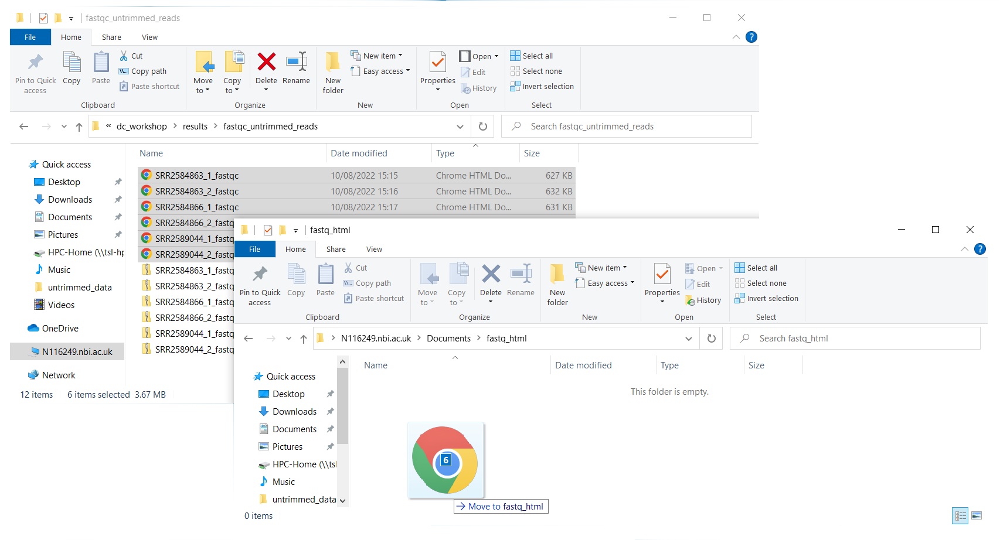

2 Assessing read quality
2.1 Bioinformatic workflows
When working with high-throughput sequencing data, the raw reads you get off of the sequencer will need to pass through a number of different tools in order to generate your final desired output. The execution of this set of tools in a specified order is commonly referred to as a workflow or a pipeline.
An example of the workflow we will be using for our variant calling analysis is provided below with a brief description of each step.

Quality control - Assessing quality
Quality control - Trimming and/or filtering reads (if necessary)
Align reads to reference genome
Perform post-alignment clean-up
Variant calling
These workflows in bioinformatics adopt a plug-and-play approach in that the output of one tool can be easily used as input to another tool without any extensive configuration. Having standards for data formats is what makes this feasible. Standards ensure that data is stored in a way that is generally accepted and agreed upon within the community. The tools that are used to analyze data at different stages of the workflow are therefore built under the assumption that the data will be provided in a specific format.
2.2 Get the data
Often times, the first step in a bioinformatic workflow is getting the data you want to work with onto a computer where you can work with it. If you have outsourced sequencing of your data, the sequencing center will usually provide you with a link that you can use to download your data. Today we will be working with publicly available sequencing data.
We are studying a population of Escherichia coli (designated Ara-3), which were propagated for more than 50,000 generations in a glucose-limited minimal medium. We will be working with three samples from this experiment, one from 5,000 generations, one from 15,000 generations, and one from 50,000 generations. The population changed substantially during the course of the experiment, and we will be exploring how with our variant calling workflow.
The data are paired-end, so we will download two files for each sample. We will use the European Nucleotide Archive to get our data. The ENA “provides a comprehensive record of the world’s nucleotide sequencing information, covering raw sequencing data, sequence assembly information and functional annotation.” The ENA also provides sequencing data in the fastq format, an important format for sequencing reads that we will be learning about today.
2.2.1 Copy directory containing data on the HPC
Using the terminal, you can access the remote server using the ssh command (use your username)
$ ssh [username]@hpc.tsl.ac.ukNow that you are logged in on the server, we must start an interactive session.
$ interactiveCopy the directory containing the dataset to your home directory.
$ cp -r /tsl/data/dc_workshop/ ~Now you can access the directory that now should contain the fastq files.
$ cd ~/dc_workshop/data/untrimmed_fastqThe data comes in a compressed format, which is why there is a .gz at the end of the file names. This makes it faster to transfer, and allows it to take up less space on our computer. Let’s unzip one of the files so that we can look at the fastq format.
$ gunzip SRR2584863_1.fastq.gzIt takes a few seconds.
2.3 Quality control
2.3.1 Details on the FASTQ format
Although it looks complicated (and it is), we can understand the fastq format with a little decoding. Some rules about the format include…
| Line | Description |
|---|---|
| 1 | Always begins with ‘@’ and then information about the read |
| 2 | The actual DNA sequence |
| 3 | Always begins with a ‘+’ and sometimes the same info in line 1 |
| 4 | Has a string of characters which represent the quality scores; must have same number of characters as line 2 |
We can view the first complete read in one of the files our data set by using head to look at the first four lines.
$ head -n 4 SRR2584863_1.fastq
@SRR2584863.1 HWI-ST957:244:H73TDADXX:1:1101:4712:2181/1
TTCACATCCTGACCATTCAGTTGAGCAAAATAGTTCTTCAGTGCCTGTTTAACCGAGTCACGCAGGGGTTTTTGGGTTACCTGATCCTGAGAGTTAACGGTAGAAACGGTCAGTACGTCAGAATTTACGCGTTGTTCGAACATAGTTCTG
+
CCCFFFFFGHHHHJIJJJJIJJJIIJJJJIIIJJGFIIIJEDDFEGGJIFHHJIJJDECCGGEGIIJFHFFFACD:BBBDDACCCCAA@@CA@C>C3>@5(8&>C:9?8+89<4(:83825C(:A#########################Line 4 shows the quality for each nucleotide in the read. Quality is interpreted as the probability of an incorrect base call (e.g. 1 in 10) or, equivalently, the base call accuracy (e.g. 90%). To make it possible to line up each individual nucleotide with its quality score, the numerical score is converted into a code where each individual character represents the numerical quality score for an individual nucleotide. For example, in the line above, the quality score line is:
CCCFFFFFGHHHHJIJJJJIJJJIIJJJJIIIJJGFIIIJEDDFEGGJIFHHJIJJDECCGGEGIIJFHFFFACD:BBBDDACCCCAA@@CA@C>C3>@5(8&>C:9?8+89<4(:83825C(:A#########################The numerical value assigned to each of these characters depends on the sequencing platform that generated the reads. The sequencing machine used to generate our data uses the standard Sanger quality PHRED score encoding, using Illumina version 1.8 onwards. Each character is assigned a quality score between 0 and 41 as shown in the chart below.
Quality encoding: !"#$%&'()*+,-./0123456789:;<=>?@ABCDEFGHIJ
| | | | |
Quality score: 01........11........21........31........41Each quality score represents the probability that the corresponding nucleotide call is incorrect. This quality score is logarithmically based, so a quality score of 10 reflects a base call accuracy of 90%, but a quality score of 20 reflects a base call accuracy of 99%. These probability values are the results from the base calling algorithm and depend on how much signal was captured for the base incorporation.
Looking back at our read:
@SRR2584863.1 HWI-ST957:244:H73TDADXX:1:1101:4712:2181/1
TTCACATCCTGACCATTCAGTTGAGCAAAATAGTTCTTCAGTGCCTGTTTAACCGAGTCACGCAGGGGTTTTTGGGTTACCTGATCCTGAGAGTTAACGGTAGAAACGGTCAGTACGTCAGAATTTACGCGTTGTTCGAACATAGTTCTG
+
CCCFFFFFGHHHHJIJJJJIJJJIIJJJJIIIJJGFIIIJEDDFEGGJIFHHJIJJDECCGGEGIIJFHFFFACD:BBBDDACCCCAA@@CA@C>C3>@5(8&>C:9?8+89<4(:83825C(:A#########################We can now see that there is a range of quality scores, but that the end of the sequence is very poor (# = a quality score of 2).
At this point, let’s load the relevant tools that are already installed on the server:
$ source package /nbi/software/production/bin/fastqc-0.11.8
loaded /nbi/software/production/bin/fastqc-0.11.8One way to validate if the correct software is loaded and ready to work with is to check the software’s manual:
$ fastqc -hIf FastQC is not installed, you will get an error message:
$ fastqc -h
The program 'fastqc' is currently not installed. You can install it by typing:
sudo apt-get install fastqcIf this happens check with your instructor before trying to install it.
2.3.2 Assessing read quality with FastQC
In real life, you will not be assessing the quality of your reads by visually inspecting your FASTQ files. Rather, you will be using a software program to assess read quality and filter out poor quality reads. We will first use a program called FastQC (andrews2010fastqcto?) visualize the quality of our reads. Later in our workflow, we will use another program to filter out poor quality reads.
FastQC has a number of features which can give you a quick impression of any problems your data may have, so you can take these issues into consideration before moving forward with your analyses. Rather than looking at quality scores for each individual read, FastQC looks at quality collectively across all reads within a sample. The image below shows one FastQC-generated plot that indicates a very high quality sample:

The x-axis displays the base position in the read, and the y-axis shows quality scores. In this example, the sample contains reads that are 40 bp long. This is much shorter than the reads we are working with in our workflow. For each position, there is a box-and-whisker plot showing the distribution of quality scores for all reads at that position. The horizontal red line indicates the median quality score and the yellow box shows the 1st to 3rd quartile range. This means that 50% of reads have a quality score that falls within the range of the yellow box at that position. The whiskers show the absolute range, which covers the lowest (0th quartile) to highest (4th quartile) values.
For each position in this sample, the quality values do not drop much lower than 32. This is a high quality score. The plot background is also color-coded to identify good (green), acceptable (yellow), and bad (red) quality scores.
Now let’s take a look at a quality plot on the other end of the spectrum.

Here, we see positions within the read in which the boxes span a much wider range. Also, quality scores drop quite low into the “bad” range, particularly on the tail end of the reads. The FastQC tool produces several other diagnostic plots to assess sample quality, in addition to the one plotted above.
2.3.3 Running FastQC
We will now assess the quality of the reads that we downloaded. First, make sure you are still in the untrimmed_fastq directory
cd ~/dc_workshop/data/untrimmed_fastq/FastQC can accept multiple file names as input, and on both zipped and unzipped files, so we can use the *.fastq* wildcard to run FastQC on all of the FASTQ files in this directory.
$ fastqc *.fastq*You will see an automatically updating output message telling you the progress of the analysis. It will start like this:
Started analysis of SRR2584863_1.fastq
Approx 5% complete for SRR2584863_1.fastq
Approx 10% complete for SRR2584863_1.fastq
Approx 15% complete for SRR2584863_1.fastq
Approx 20% complete for SRR2584863_1.fastq
Approx 25% complete for SRR2584863_1.fastq
Approx 30% complete for SRR2584863_1.fastq
Approx 35% complete for SRR2584863_1.fastq
Approx 40% complete for SRR2584863_1.fastq
Approx 45% complete for SRR2584863_1.fastqIn total, it should take about five minutes for FastQC to run on all six of our FASTQ files. When the analysis completes, your prompt will return. So your screen will look something like this:
Approx 80% complete for SRR2589044_2.fastq.gz
Approx 85% complete for SRR2589044_2.fastq.gz
Approx 90% complete for SRR2589044_2.fastq.gz
Approx 95% complete for SRR2589044_2.fastq.gz
Analysis complete for SRR2589044_2.fastq.gz
$The FastQC program has created several new files within our data/untrimmed_fastq/ directory.
$ ls
SRR2584863_1.fastq SRR2584866_1_fastqc.html SRR2589044_1_fastqc.html
SRR2584863_1_fastqc.html SRR2584866_1_fastqc.zip SRR2589044_1_fastqc.zip
SRR2584863_1_fastqc.zip SRR2584866_1.fastq.gz SRR2589044_1.fastq.gz
SRR2584863_2_fastqc.html SRR2584866_2_fastqc.html SRR2589044_2_fastqc.html
SRR2584863_2_fastqc.zip SRR2584866_2_fastqc.zip SRR2589044_2_fastqc.zip
SRR2584863_2.fastq.gz SRR2584866_2.fastq.gz SRR2589044_2.fastq.gzFor each input FASTQ file, FastQC has created a .zip file and a
.html file. The .zip file extension indicates that this is actually a compressed set of multiple output files. We will be working with these output files soon. The .html file is a stable webpage displaying the summary report for each of our samples.
We want to keep our data files and our results files separate, so we will move these output files into a new directory within our results/ directory.
$ mkdir -p ~/dc_workshop/results/fastqc_untrimmed_reads
$ mv *.zip ~/dc_workshop/results/fastqc_untrimmed_reads/
$ mv *.html ~/dc_workshop/results/fastqc_untrimmed_reads/Now we can navigate into this results directory and do some closer inspection of our output files.
$ cd ~/dc_workshop/results/fastqc_untrimmed_reads/2.3.4 Viewing the FastQC results
If we were working on our local computers, we would be able to look at each of these HTML files by opening them in a web browser.
However, these files are currently sitting on our remote server, where our local computer can not see them. And, since we are only logging into the server via the command line - it does not have any web browser setup to display these files either.
So the easiest way to look at these webpage summary reports will be to transfer them to our local computers (i.e. your laptop).
To transfer a file from a remote server to our own machines, we will simply use the Windows navigation system.
- From the Start Menu, select Run, then type
\\tsl-hpc-data\HPC-Home - You may need to toggle
Use different credentialson or off
A window with the directory showing the files in should pop up

Now we can go to our new directory and open the 6 HTML files.
Depending on your system, you should be able to select and open them all at once via a right click menu in your file browser.
2.3.5 Decoding the other FastQC outputs
We have now looked at quite a few “Per base sequence quality” FastQC graphs, but there are nine other graphs that we have not talked about! Below we have provided a brief overview of interpretations for each of these plots. For more information, please see the FastQC documentation here
Per tile sequence quality: the machines that perform sequencing are divided into tiles. This plot displays patterns in base quality along these tiles. Consistently low scores are often found around the edges, but hot spots can also occur in the middle if an air bubble was introduced at some point during the run.
Per sequence quality scores: a density plot of quality for all reads at all positions. This plot shows what quality scores are most common.
Per base sequence content: plots the proportion of each base position over all of the reads. Typically, we expect to see each base roughly 25% of the time at each position, but this often fails at the beginning or end of the read due to quality or adapter content.
Per sequence GC content: a density plot of average GC content in each of the reads.
Per base N content: the percent of times that ‘N’ occurs at a position in all reads. If there is an increase at a particular position, this might indicate that something went wrong during sequencing.
Sequence Length Distribution: the distribution of sequence lengths of all reads in the file. If the data is raw, there is often on sharp peak, however if the reads have been trimmed, there may be a distribution of shorter lengths.
Sequence Duplication Levels: A distribution of duplicated sequences. In sequencing, we expect most reads to only occur once. If some sequences are occurring more than once, it might indicate enrichment bias (e.g. from PCR). If the samples are high coverage (or RNA-seq or amplicon), this might not be true.
Overrepresented sequences: A list of sequences that occur more frequently than would be expected by chance.
Adapter Content: a graph indicating where adapater sequences occur in the reads.
K-mer Content: a graph showing any sequences which may show a positional bias within the reads.
2.3.6 Working with the FastQC text output
Now that we have looked at our HTML reports to get a feel for the data, let’s look more closely at the other output files. Go back to the tab in your terminal program that is connected to your interactive session on the server and make sure you are in our results subdirectory.
$ cd ~/dc_workshop/results/fastqc_untrimmed_reads/
$ ls
SRR2584863_1_fastqc.html SRR2584866_1_fastqc.html SRR2589044_1_fastqc.html
SRR2584863_1_fastqc.zip SRR2584866_1_fastqc.zip SRR2589044_1_fastqc.zip
SRR2584863_2_fastqc.html SRR2584866_2_fastqc.html SRR2589044_2_fastqc.html
SRR2584863_2_fastqc.zip SRR2584866_2_fastqc.zip SRR2589044_2_fastqc.zipOur .zip files are compressed files. They each contain multiple different types of output files for a single input FASTQ file. To view the contents of a .zip file, we can use the program unzip to decompress these files. Let’s try doing them all at once using a wildcard.
$ unzip *.zip
Archive: SRR2584863_1_fastqc.zip
caution: filename not matched: SRR2584863_2_fastqc.zip
caution: filename not matched: SRR2584866_1_fastqc.zip
caution: filename not matched: SRR2584866_2_fastqc.zip
caution: filename not matched: SRR2589044_1_fastqc.zip
caution: filename not matched: SRR2589044_2_fastqc.zipThis did not work. We unzipped the first file and then got a warning message for each of the other .zip files. This is because unzip expects to get only one zip file as input. We could go through and unzip each file one at a time, but this is very time consuming and error-prone. Someday you may have 500 files to unzip!
A more efficient way is to use a for loop like we learned in the Shell Genomics lesson to iterate through all of our .zip files. Let’s see what that looks like and then we will discuss what we are doing with each line of our loop.
Do not copy-paste the four lines at once. You must type the for loop line by line!
$ for filename in *.zip
> do
> unzip $filename
> doneIn this example, the input is six filenames (one filename for each of our .zip files). Each time the loop iterates, it will assign a file name to the variable filename and run the unzip command. The first time through the loop, $filename is SRR2584863_1_fastqc.zip. The interpreter runs the command unzip on SRR2584863_1_fastqc.zip. For the second iteration, $filename becomes SRR2584863_2_fastqc.zip. This time, the shell runs unzip on SRR2584863_2_fastqc.zip. It then repeats this process for the four other .zip files in our directory.
When we run our for loop, you will see output that starts like this:
Archive: SRR2589044_2_fastqc.zip
creating: SRR2589044_2_fastqc/
creating: SRR2589044_2_fastqc/Icons/
creating: SRR2589044_2_fastqc/Images/
inflating: SRR2589044_2_fastqc/Icons/fastqc_icon.png
inflating: SRR2589044_2_fastqc/Icons/warning.png
inflating: SRR2589044_2_fastqc/Icons/error.png
inflating: SRR2589044_2_fastqc/Icons/tick.png
inflating: SRR2589044_2_fastqc/summary.txt
inflating: SRR2589044_2_fastqc/Images/per_base_quality.png
inflating: SRR2589044_2_fastqc/Images/per_tile_quality.png
inflating: SRR2589044_2_fastqc/Images/per_sequence_quality.png
inflating: SRR2589044_2_fastqc/Images/per_base_sequence_content.png
inflating: SRR2589044_2_fastqc/Images/per_sequence_gc_content.png
inflating: SRR2589044_2_fastqc/Images/per_base_n_content.png
inflating: SRR2589044_2_fastqc/Images/sequence_length_distribution.png
inflating: SRR2589044_2_fastqc/Images/duplication_levels.png
inflating: SRR2589044_2_fastqc/Images/adapter_content.png
inflating: SRR2589044_2_fastqc/fastqc_report.html
inflating: SRR2589044_2_fastqc/fastqc_data.txt
inflating: SRR2589044_2_fastqc/fastqc.foThe unzip program is decompressing the .zip files and creating a new directory (with subdirectories) for each of our samples, to store all of the different output that is produced by FastQC. There
are a lot of files here. The one we are going to focus on is the summary.txt file.
If you list the files in our directory now you will see:
SRR2584863_1_fastqc SRR2584866_1_fastqc SRR2589044_1_fastqc
SRR2584863_1_fastqc.html SRR2584866_1_fastqc.html SRR2589044_1_fastqc.html
SRR2584863_1_fastqc.zip SRR2584866_1_fastqc.zip SRR2589044_1_fastqc.zip
SRR2584863_2_fastqc SRR2584866_2_fastqc SRR2589044_2_fastqc
SRR2584863_2_fastqc.html SRR2584866_2_fastqc.html SRR2589044_2_fastqc.html
SRR2584863_2_fastqc.zip SRR2584866_2_fastqc.zip SRR2589044_2_fastqc.zipThe .html files and the uncompressed .zip files are still present, but now we also have a new directory for each of our samples. We can see for sure that it is a directory if we use the -F flag for ls.
$ ls -F
SRR2584863_1_fastqc/ SRR2584866_1_fastqc/ SRR2589044_1_fastqc/
SRR2584863_1_fastqc.html SRR2584866_1_fastqc.html SRR2589044_1_fastqc.html
SRR2584863_1_fastqc.zip SRR2584866_1_fastqc.zip SRR2589044_1_fastqc.zip
SRR2584863_2_fastqc/ SRR2584866_2_fastqc/ SRR2589044_2_fastqc/
SRR2584863_2_fastqc.html SRR2584866_2_fastqc.html SRR2589044_2_fastqc.html
SRR2584863_2_fastqc.zip SRR2584866_2_fastqc.zip SRR2589044_2_fastqc.zipLet’s see what files are present within one of these output directories.
$ ls -F SRR2584863_1_fastqc/
fastqc_data.txt fastqc.fo fastqc_report.html Icons/ Images/ summary.txtUse less to preview the summary.txt file for this sample.
$ less SRR2584863_1_fastqc/summary.txt
PASS Basic Statistics SRR2584863_1.fastq
PASS Per base sequence quality SRR2584863_1.fastq
PASS Per tile sequence quality SRR2584863_1.fastq
PASS Per sequence quality scores SRR2584863_1.fastq
WARN Per base sequence content SRR2584863_1.fastq
WARN Per sequence GC content SRR2584863_1.fastq
PASS Per base N content SRR2584863_1.fastq
PASS Sequence Length Distribution SRR2584863_1.fastq
PASS Sequence Duplication Levels SRR2584863_1.fastq
PASS Overrepresented sequences SRR2584863_1.fastq
WARN Adapter Content SRR2584863_1.fastqThe summary file gives us a list of tests that FastQC ran, and tells us whether this sample passed, failed, or is borderline (WARN). Remember, to quit from less you must type q.
2.4 Documenting your work
We can make a record of the results we obtained for all our samples
by concatenating all of our summary.txt files into a single file using the cat command. We will call this fastqc_summaries.txt and move it to ~/dc_workshop/docs.
$ mkdir -p ~/dc_workshop/docs/
$ cat */summary.txt > ~/dc_workshop/docs/fastqc_summaries.txt2.5 Summary
Although we have used a particular quality encoding system to demonstrate interpretation of read quality, different sequencing machines use different encoding systems. This means that, depending on which sequencer you use to generate your data, a # may not be an indicator of a poor quality base call.
This mainly relates to older Solexa/Illumina data, but it is essential that you know which sequencing platform was used to generate your data, so that you can tell your quality control program which encoding to use. If you choose the wrong encoding, you run the risk of throwing away good reads or (even worse) not throwing away bad reads!
Here we see > being used as a shell prompt, whereas > is also used to redirect output. Similarly, $ is used as a shell prompt, but, as we saw earlier, it is also used to ask the shell to get the value of a variable.
If the shell prints > or $ then it expects you to type something, and the symbol is a prompt.
If you type > or $ yourself, it is an instruction from you that the shell should redirect output or get the value of a variable.
- Quality encodings vary across sequencing platforms.
forloops let you perform the same set of operations on multiple files with a single command.